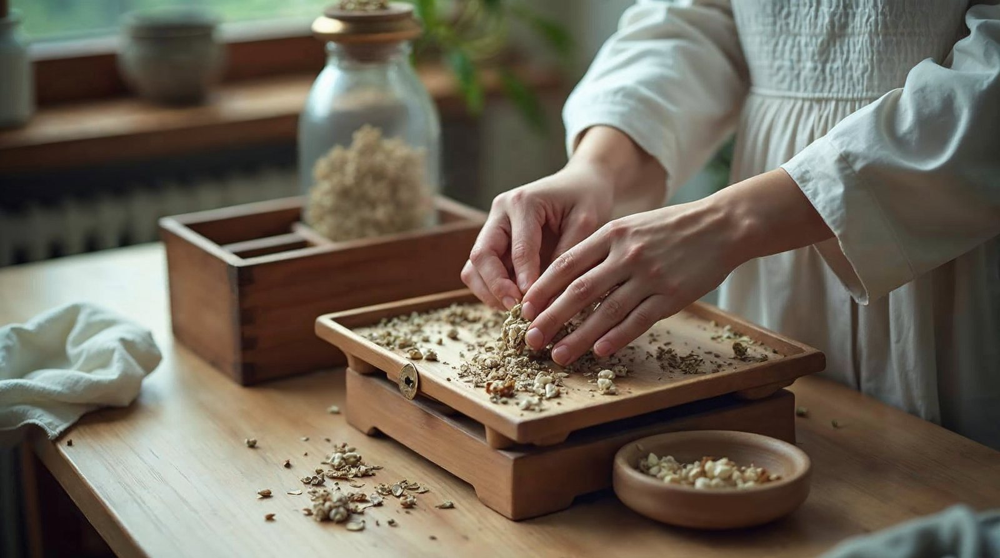
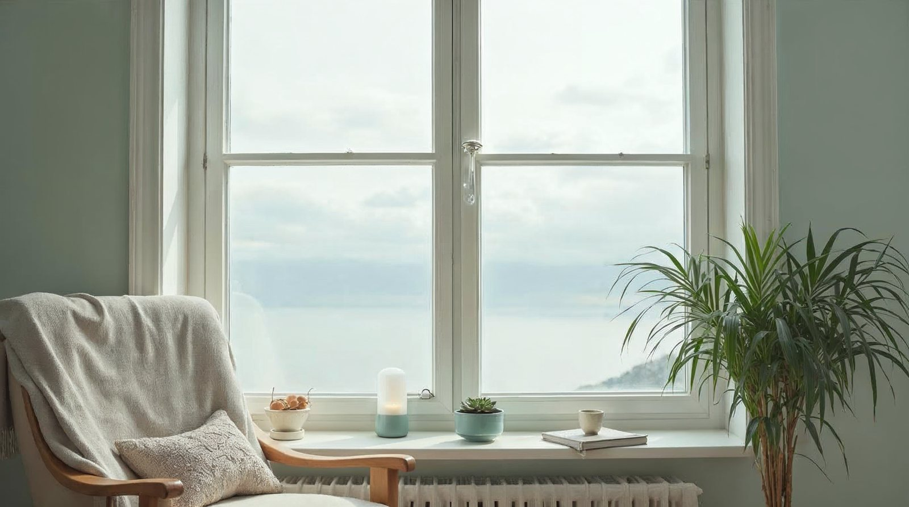

이종호 한의사 감수좋은꿈참사랑한의원 대표원장 (한의사 면허번호 19769)발행 2026-11-22 · 수정 2026-11-26
이 글의 차례
- 왜 이런 불편이 생길 수 있나요
- 조이는 두통과 욱신거리는 두통은 다른 얘기예요
- 왜 비 오기 전날 더 무겁게 느껴질까요?
- 목과 어깨가 굳으면 왜 머리까지 무거워질까요?
- 물과 커피, 얼마나 바꾸면 될까요?
- 예를 들면 이런 경우입니다
- 날씨 두통을 더 자주 느끼는 생활도 있어요
- 스스로 점검해 보세요
- 먼저 이렇게 여쭙니다
- 일상에서 먼저 해 볼 수 있는 것
- 자주 하는 오해
- 환절기 하루, 이렇게 보내 보세요
- 진통제는 어떻게 생각하면 좋을까요?
- 한의원에서 함께 살필 수 있는 경우
- 처음 오시면 이렇게 살펴봅니다
- 얼마나 지켜보고, 언제 진료를 받을까요
- 이렇게 기록해 오시면 상담이 쉬워집니다
- 이런 증상은 먼저 확인이 필요합니다
환절기나 비가 오기 전후로 머리가 띵하고 무거워진다면, 날씨 하나만이 아니라 그 시기에 함께 달라진 잠과 목·어깨의 긴장, 물 마시는 양을 같이 보는 것이 실마리가 됩니다. 날씨는 바꿀 수 없지만 날씨와 함께 흔들리는 생활 습관은 조금씩 조정해 볼 수 있습니다. 다만 갑자기 시작된 아주 심한 두통은 날씨 탓으로 넘기지 말고 먼저 확인해야 합니다.
진료실에서 이런 말씀을 자주 들어요. "원장님, 저는 일기예보 안 봐도 비 오는 거 알아요. 머리가 먼저 무거워지거든요." 그런 분들이 생각보다 많아요. 원래 그런 몸도 있는 거예요. 그러니 예민하다고 자책하실 필요는 없어요.
다만 저는 날씨만 탓하고 끝내지 않아요. 날씨는 바꿀 수 없지만, 날씨가 바뀔 때마다 같이 흔들리는 잠과 목, 물, 커피는 바꿀 수 있거든요. 거기서부터 같이 찾아보는 거예요.
왜 이런 불편이 생길 수 있나요
- 기온과 기압이 크게 달라지는 시기에 머리가 무겁다고 느끼는 분들이 있으며, 예민한 정도는 사람마다 다릅니다.
- 환절기에는 잠자리 온도가 맞지 않아 잠이 얕아지기 쉽고, 잠이 부족한 날 두통이 겹치는 경우가 많습니다.
- 추워지면 어깨를 움츠리고 목에 힘이 들어가 목덜미 근육이 굳기 쉽습니다.
- 날이 서늘해지면 물은 덜 마시고 커피는 그대로 마시는 경우가 많아 수분과 카페인의 균형도 달라집니다.
그러니까 사실은 날씨는 마지막 한 방울인 경우가 많아요. 물이 거의 찬 컵에 한 방울이 떨어지면 넘치잖아요. 잠이 모자라고, 목과 어깨가 굳고, 물은 덜 마시고 커피는 더 마신 상태에서 기압이 흔들리면 그게 두통으로 넘치는 거예요. 같은 날씨에도 어떤 날은 괜찮고 어떤 날은 아픈 이유가 이거예요.
그래서 컵을 덜 채워 두는 게 중요해요. 날씨를 막을 수는 없어도 컵 안의 물, 그러니까 잠 부족과 긴장을 줄여 두면 같은 날씨가 와도 넘치지 않는 날이 늘어나는 경우가 많아요.
왜인 줄 아세요? 사람 몸은 바깥이 바뀌면 안에서 그걸 맞추느라 일을 더 해요. 추워지면 체온을 지키려고 혈관과 근육이 오그라들고, 습해지면 몸이 무겁게 느껴지죠. 여유가 있는 몸은 이 일을 티 안 나게 해내지만, 이미 지친 몸은 그 일이 버거워서 두통으로 신호를 보내는 거예요.
그래서 날씨 두통이 잦아졌다면 요즘 몸이 많이 지쳐 있다는 신호로 보셔도 돼요.
조이는 두통과 욱신거리는 두통은 다른 얘기예요
두통도 두 가지를 나눠서 보셔야 해요. 머리 둘레를 띠로 조이는 것처럼 무겁고 뒷목이 뻣뻣한 두통이 있고, 한쪽 머리가 맥박 뛰듯 욱신거리고 빛이나 소리가 싫어지며 속이 메스꺼운 두통이 있어요.
앞의 것은 목과 어깨의 긴장, 잠, 자세와 함께 오는 경우가 많고, 뒤의 것은 편두통처럼 따로 살펴야 하는 모양에 가까워요. 날씨가 바뀔 때 오는 두통이 어느 쪽인지에 따라 생활에서 손볼 곳도 달라져요. 그래서 저는 "어떻게 아프세요?"를 꼭 먼저 여쭤봐요.
둘이 섞여 있는 분도 많아요. 평소엔 조이는 두통이 있다가 날씨가 크게 바뀌는 날 욱신거리는 두통이 겹치는 식이에요. 기록을 해 두시면 이런 차이가 잘 보여요.
왜 비 오기 전날 더 무겁게 느껴질까요?
비가 오기 전에는 기압이 떨어지고 습도가 올라가요. 이런 변화에 유난히 예민하게 반응하는 분들이 있는데, 예민한 정도는 사람마다 달라요. 습한 날에는 몸 전체가 무겁고 머리가 솜을 뒤집어쓴 듯 띵하다고 표현하시는 분도 많고요.
한의학에서는 이런 모양을 몸 안에 습한 기운이 쌓여 순환이 더딘 상태로 보기도 해요. 그래서 이런 분들은 머리만이 아니라 소화가 더부룩한지, 몸이 잘 붓는지, 아침에 일어날 때 몸이 무거운지도 함께 여쭤봐요. 머리 아픈 데만 보는 게 아니라 몸 전체를 보려는 거예요.
목과 어깨가 굳으면 왜 머리까지 무거워질까요?
목 뒤와 어깨 근육은 뒷머리, 관자놀이 쪽과 이어져 있어요. 추운 날 어깨를 움츠리고 고개를 숙인 채 오래 있으면 이 근육들이 하루 종일 일을 하게 되고, 저녁쯤엔 뒷머리부터 무겁게 조여 오는 거예요.
손으로 뒷머리 아래, 목이 시작되는 오목한 자리를 살짝 눌러 보세요. 두통이 있는 날 그 자리가 유난히 뻐근하다면 목의 긴장이 두통에 섞여 있을 가능성이 있어요. 그래서 저는 머리 이야기로 오셔도 목과 어깨를 꼭 같이 만져 봐요.
책상 앞에서 오래 일하시는 분이라면 화면 높이와 의자도 함께 봐 주세요. 고개가 앞으로 쭉 빠진 자세는 날씨와 상관없이 목에 짐을 얹어 두는 것과 같거든요.
물과 커피, 얼마나 바꾸면 될까요?
한꺼번에 바꾸려고 하면 오래 못 가요. 커피를 끊으라는 게 아니에요. 오후 늦게 마시는 한 잔만 따뜻한 물이나 보리차로 바꿔 보는 거예요. 커피를 갑자기 확 줄이면 그것 때문에 머리가 아플 수도 있어서, 천천히 줄이는 게 좋아요.
물은 목마를 때 한꺼번에 마시기보다 책상 위에 컵을 두고 한두 시간마다 몇 모금씩 드시는 게 좋아요. 날이 서늘해지면 갈증을 덜 느껴서 생각보다 물을 적게 드시는 분이 많거든요.
예를 들면 이런 경우입니다
- 예를 들어 환절기에 잠자리가 추워 새벽에 자주 깨는 경우라면, 두통약보다 먼저 이불과 방 온도를 맞춰 잠을 지키는 쪽부터 손봐요.
- 예를 들어 비 오는 날마다 출근길 버스에서 어깨를 움츠리고 서 있는 경우라면, 목도리로 목을 감싸고 도착해서 어깨를 천천히 돌려 푸는 것부터 해 봐요.
- 예를 들어 날이 서늘해지면서 물은 거의 안 마시고 커피만 하루 서너 잔 드시는 경우라면, 커피 한 잔을 따뜻한 물로 바꾸는 것부터 시작해요.
날씨 두통을 더 자주 느끼는 생활도 있어요
모든 분이 그런 건 아니지만, 생활 모양에 따라 날씨 변화가 더 크게 느껴지는 경우가 있어요.
- 잠드는 시각이 요일마다 크게 달라지는 생활
- 실내와 바깥을 자주 오가며 온도 차를 크게 겪는 일
- 하루 대부분을 고개를 숙이고 화면이나 서류를 보는 일
- 끼니가 불규칙해 배고픈 채로 오래 버티는 날이 많은 생활
이런 생활이라면 날씨를 탓하기 전에 잠과 끼니, 자세 중 하나를 먼저 고정해 보세요. 그 하나가 자리 잡으면 같은 날씨에도 버티는 힘이 달라지는 경우가 많아요.
배가 고픈 채로 오래 버티는 것도 두통을 부르는 경우가 있어요. 바쁜 날일수록 끼니를 한 번에 몰아 먹기보다 간격을 너무 길게 비우지 않는 게 좋아요.
스스로 점검해 보세요
- 두통이 오는 날 전날 잠이 평소보다 짧았다
- 하루에 마시는 물이 컵으로 세 잔이 안 된다
- 커피를 오후 늦게까지 마신다
- 추운 날 어깨를 움츠리고 다니는 일이 많다
- 진통제를 먹는 날이 한 달에 열흘을 넘는다
- 두통이 올 때 속이 더부룩하거나 메스껍다
- 비 오는 날 몸 전체가 무겁고 잘 붓는다
해당하는 항목이 여럿이라면 진료 때 표시해서 가져와 주세요.
먼저 이렇게 여쭙니다
- 두통이 날씨가 바뀌기 전에 시작되나요, 바뀐 뒤에 시작되나요?
- 머리가 조이는 느낌인가요, 욱신거리나요? 한쪽인가요, 양쪽인가요?
- 그날 잠은 몇 시간 잤고, 카페인과 식사는 어땠나요?
- 목과 어깨가 뻣뻣하거나 눈이 피곤한 느낌이 함께 있나요?
- 진통제를 한 달에 며칠 정도 드시나요?
일상에서 먼저 해 볼 수 있는 것
- 두통이 온 날짜와 날씨, 잠든 시각, 식사, 커피 잔 수를 한 줄씩 적어 2~3주 패턴 찾아보기
- 비 소식이나 큰 기온 변화가 예보된 날은 전날 평소보다 30분 일찍 눕기
- 물은 한 번에 많이보다 한두 시간마다 몇 모금씩 나누어 마시기
- 외출할 때 목도리로 목을 따뜻하게 하고, 두 시간마다 어깨를 천천히 돌려 풀기
숙제는 하나만 드릴게요. 비 소식이 있는 날 전날만큼은 평소보다 일찍 누워 주세요. 다른 건 하던 대로 하셔도 돼요. 휴대전화 날씨 알림을 켜 두면 잊지 않고 챙기기 쉬워요. 잠이 컵의 물을 줄이는 가장 쉬운 방법인 경우가 많거든요.
자주 하는 오해
- 날씨 때문이니 어쩔 수 없다고 여기기 쉽지만, 같은 날씨에도 덜 아픈 날이 있다면 손볼 수 있는 부분이 있다는 뜻이에요.
- 두통이 오면 진한 커피로 버티는 분이 많은데, 커피에 기대는 날이 늘면 커피를 못 마신 날 오히려 머리가 아프기도 해요.
- 진통제는 끝까지 참아야 한다고 생각하는 분도 있지만, 참는 게 답은 아니에요. 다만 먹는 날이 늘고 있다면 기록해서 의사나 약사와 상의하는 게 좋아요.
- 목이 아픈 건 두통과 상관없다고 여기기 쉬운데, 목 뒤가 굳으면 뒷머리와 관자놀이까지 무거워지는 경우가 많아요.
잠자리 온도도 함께 봐 주세요. 환절기에는 낮엔 덥고 밤엔 서늘해서 잠들 때 이불을 걷어찼다가 새벽에 추워 깨는 일이 많아요. 그렇게 쪼개진 잠이 다음 날 두통의 컵을 채우는 거예요. 얇은 이불을 두 겹으로 준비해 두고 밤사이 하나를 덮었다 걷었다 할 수 있게 해 두면 도움이 돼요. 잠옷도 목과 어깨를 덮는 것으로 골라 주세요.
환절기 하루, 이렇게 보내 보세요
다 하실 필요는 없어요. 하기 쉬운 것 하나부터 골라 보세요.
- 아침: 일어나서 커튼을 열고 미지근한 물 한 컵 마시기
- 출근길: 목도리로 목을 감싸고, 어깨에 힘이 들어가 있는지 한 번씩 확인하기
- 오전과 오후: 두 시간마다 일어나 어깨를 뒤로 천천히 다섯 번 돌리기
- 저녁: 따뜻한 물로 씻으며 목 뒤를 데워 주기
- 잠들기 전: 화면은 일찍 내려놓고, 비 소식이 있으면 평소보다 30분 일찍 눕기
운동도 세게 할 필요 없어요. 천천히 오래 걷는 게 목과 어깨의 긴장을 덜고 잠을 돕는 데 도움이 되는 경우가 많아요. 일주일에 한 번 세게 하는 것보다 일주일에 여러 번 가볍게 하는 게 훨씬 좋아요.
진통제는 어떻게 생각하면 좋을까요?
아플 때 진통제를 드시는 건 괜찮아요. 하루를 버텨야 하니까요. 다만 한 달에 먹는 날이 점점 늘어난다면 한번 멈춰서 살펴볼 때예요. 진통제를 자주 먹다 보면 두통이 오히려 잦아지는 경우가 있다고 알려져 있거든요.
그렇다고 혼자 갑자기 끊으실 필요는 없어요. 처방받은 약은 처방한 의사와 상의 없이 줄이거나 끊지 않아요. 언제, 몇 알을 드셨는지 기록해서 의사나 약사와 상의하시고, 저는 그 사이에 두통이 덜 오도록 잠과 긴장을 같이 살피는 거예요.

한의원에서 함께 살필 수 있는 경우
- 날씨가 바뀔 때마다 비슷한 두통이 반복되는 경우, 두통이 오는 날의 잠과 목·어깨 긴장을 함께 살핍니다.
- 두통과 함께 소화가 더부룩하거나 몸이 무거운 경우, 식사와 몸의 순환 상태를 이어서 여쭙니다.
- 진통제 없이는 하루를 버티기 어렵다고 느끼는 경우, 복용 기록을 함께 보며 생활 리듬을 점검하고 진통제 복용은 의사나 약사와 상의하시도록 안내합니다.
좋은꿈참사랑한의원에서는 두통이 시작되는 상황을 먼저 충분히 듣고, 진맥을 기본으로 하고 필요하다고 판단될 때 설진, 목과 어깨의 긴장을 살핀 뒤 침이나 약침, 한약 상담 가운데 지금 상태에 맞는 방법을 정합니다. 귀가 전에는 다음 날씨 변화 때 지켜볼 점을 함께 정리해 드립니다.
처음 오시면 이렇게 살펴봅니다
모든 분의 맥을 먼저 짚고 시작해요. 그다음 두통이 어떤 모양인지, 언제 시작해서 얼마나 가는지, 날씨가 바뀌기 전인지 후인지를 여쭤봐요. 잠과 식사, 커피와 물, 진통제 기록도 함께 보고요.
필요하다고 판단되면 혀를 보는 설진을 더하고, 목과 어깨, 뒷머리 아래가 얼마나 굳어 있는지 손으로 확인해요. 그 뒤 침이나 약침, 한약 상담 가운데 지금 상태에 맞는 방법을 함께 정해요.
한약을 생각할 때는 지금 드시는 약을 먼저 확인해요. 임신 중이거나 가능성이 있으면 먼저 알려 주세요. 그런 경우엔 산부인과와 상의하시도록 안내해요. 보통은 한 달쯤 지켜보고 다시 판단하는 경우가 많아요.
얼마나 지켜보고, 언제 진료를 받을까요
두통 일기를 쓰면서 잠과 물, 커피를 조금씩 바꿔 2~3주 지켜보세요. 그래도 날씨가 바뀔 때마다 하루를 버티기 힘들 만큼 아프거나, 진통제 먹는 날이 계속 늘어난다면 혼자 견디지 마시고 진료를 받아 보세요.
두통이 이전과 모양이 달라졌거나 점점 심해지고 있다면 병원에서 먼저 확인받으시는 게 좋아요. 날씨 때문이겠거니 하고 넘기기보다 한번 짚고 가는 거예요.
침은 굳은 목과 어깨, 뒷머리 주변의 긴장을 살피며 쓰는 경우가 많고, 소화가 더부룩하고 몸이 무겁게 붓는 분이라면 한약 상담을 함께 이야기하기도 해요. 무엇을 할지는 이유를 먼저 설명드리고 함께 정해요. 한약을 드시다 속이 불편하면 복용을 멈추고 연락 주세요.

이렇게 기록해 오시면 상담이 쉬워집니다
- 두통이 있던 날짜와 그날 날씨(비, 기온 차)
- 두통이 시작된 시각과 강도(0~10), 이어진 시간
- 전날 잠든 시각과 일어난 시각, 커피와 물의 양
- 진통제 이름과 복용 횟수
처음부터 모든 칸을 채우려고 하면 금방 지쳐요. 두통이 있던 날만 날짜와 강도 숫자 하나, 그리고 전날 잠든 시각만 적어도 충분해요. 날씨는 나중에 달력을 보며 채워도 되고요. 기록을 가져오시면 그 안에서 반복되는 모양을 같이 찾아드릴게요.
이런 증상은 먼저 확인이 필요합니다
- 갑자기 벼락처럼 시작하는 극심한 두통
- 마비, 말이 어눌해짐, 시야 이상, 의식이 흐려짐이 함께 있는 경우
이런 신호가 있으면 한의원보다 가까운 병원이나 응급실을 먼저 찾으세요.
날씨 두통은 오래 함께 지내 온 분들이 많아서 그러려니 하고 넘기시곤 해요. 해마다 환절기면 어김없이 찾아오는 손님처럼요. 그래도 덜 아픈 날을 늘리는 방법은 같이 찾을 수 있어요. 궁금한 건 편하게 물어보세요.

여쭙는 것
- 두통이 날씨가 바뀌기 전에 시작되나요, 바뀐 뒤에 시작되나요?
- 머리가 조이는 느낌인가요, 욱신거리나요? 한쪽인가요, 양쪽인가요?
- 그날 잠은 몇 시간 잤고, 카페인과 식사는 어땠나요?
생활에서 해 볼 것
- 두통이 온 날짜와 날씨, 잠든 시각, 식사, 커피 잔 수를 한 줄씩 적어 2~3주…
- 비 소식이나 큰 기온 변화가 예보된 날은 전날 평소보다 30분 일찍 눕기
- 물은 한 번에 많이보다 한두 시간마다 몇 모금씩 나누어 마시기
한의원에서 함께 살필 것
- 날씨가 바뀔 때마다 비슷한 두통이 반복되는 경우, 두통이 오는 날의 잠과 목·어깨…
- 두통과 함께 소화가 더부룩하거나 몸이 무거운 경우, 식사와 몸의 순환 상태를 이어서…
- 진통제 없이는 하루를 버티기 어렵다고 느끼는 경우, 복용 기록을 함께 보며 생활 리…
먼저 확인이 필요한 신호
- 갑자기 벼락처럼 시작하는 극심한 두통
- 마비, 말이 어눌해짐, 시야 이상, 의식이 흐려짐이 함께 있는 경우
한눈에 보는 표
| 구분 | 핵심 |
|---|---|
| 여쭙는 것 | 두통이 날씨가 바뀌기 전에 시작되나요, 바뀐 뒤에 시작되나요? 머리가 조이는 느낌인가요, 욱신거리나요? 한쪽인가요, 양쪽인가요? |
| 생활에서 해 볼 것 | 두통이 온 날짜와 날씨, 잠든 시각, 식사, 커피 잔 수를 한 줄씩 적어 2~3주 패턴 찾아보기 비 소식이나 큰 기온 변화가 예보된 날은 전날 평소보다 30분 일찍 눕기 |
| 한의원에서 함께 살필 것 | 날씨가 바뀔 때마다 비슷한 두통이 반복되는 경우, 두통이 오는 날의 잠과 목·어깨 긴장을 함께 살핍니다. 두통과 함께 소화가 더부룩하거나 몸이 무거운 경우, 식사와 몸의 순환 상태를 이어서 여쭙니다. |
| 먼저 확인이 필요한 신호 | 갑자기 벼락처럼 시작하는 극심한 두통 마비, 말이 어눌해짐, 시야 이상, 의식이 흐려짐이 함께 있는 경우 |
자주 묻는 질문
날씨 두통은 한의원에서 어떻게 살피나요?
두통의 모양과 시간대, 잠과 식사, 목과 어깨의 긴장을 함께 묻고 생활 전체의 흐름 속에서 살핍니다.
두통 일기는 어떻게 쓰나요?
날짜, 시작 시각, 강도, 날씨, 잠, 약 복용을 한 줄씩 적으면 충분합니다. 2~3주만 모아도 반복되는 모습이 보이는 경우가 많습니다.
진통제는 참는 게 좋은가요?
참는 것이 답은 아닙니다. 다만 한 달에 먹는 날이 늘고 있다면 횟수를 기록해 처방한 의사나 약사와 상의해 주세요.
비 오기 전날 미리 할 수 있는 일이 있나요?
평소보다 조금 일찍 자고, 물을 나누어 마시고, 목을 따뜻하게 하는 것부터 해 볼 수 있습니다.
날씨 두통이 있으면 운동은 쉬어야 하나요?
두통이 심한 날은 쉬어도 괜찮습니다. 평소에는 천천히 오래 걷는 가벼운 운동이 목과 어깨 긴장을 덜고 잠을 돕는 데 도움이 될 수 있습니다.
좋은꿈참사랑한의원은 재진 때 지난번 이야기부터 이어서 여쭙니다. 진료시간과 예약은 오시는 길에서 확인하세요.
어디서 상담받을 수 있나요?
좋은꿈참사랑한의원은 서울 동작구 만양로2길 2 신성빌딩 3층·5층(서울 동작구 상도동, 7호선 상도역 3번 출구 근처)에 있습니다. 한의사 3명(이종호 대표원장, 조영기 수석진료원장, 정원영 진료원장)이 진료합니다. 진료시간은 평일 09:30~20:00(점심 13:00~14:00), 토·일·공휴일 09:30~15:00이며, 방문 전 전화로 확인을 권합니다. 예약은 네이버 예약, 카카오톡 상담, 전화 02-815-7510로 받습니다.
이 글은 일반적인 건강 정보이며 개인의 진단이나 치료를 대신하지 않습니다. 증상이 있거나 복용 중인 약이 있다면 진료를 통해 확인하세요. 치료 효과는 개인마다 다를 수 있습니다.
작성 기준: 일반적으로 알려져 있는 건강 정보를 참고해 정리했습니다(대표원장 감수). 증상 기록은 1~2주 동안 하루 1회, 비슷한 시간에 적어 오시면 지난 상태와 비교하기 쉽습니다.